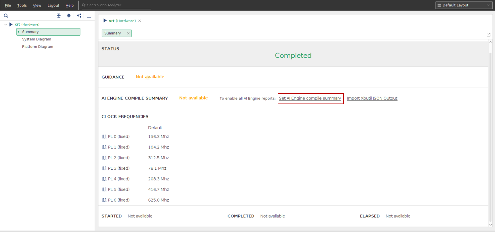
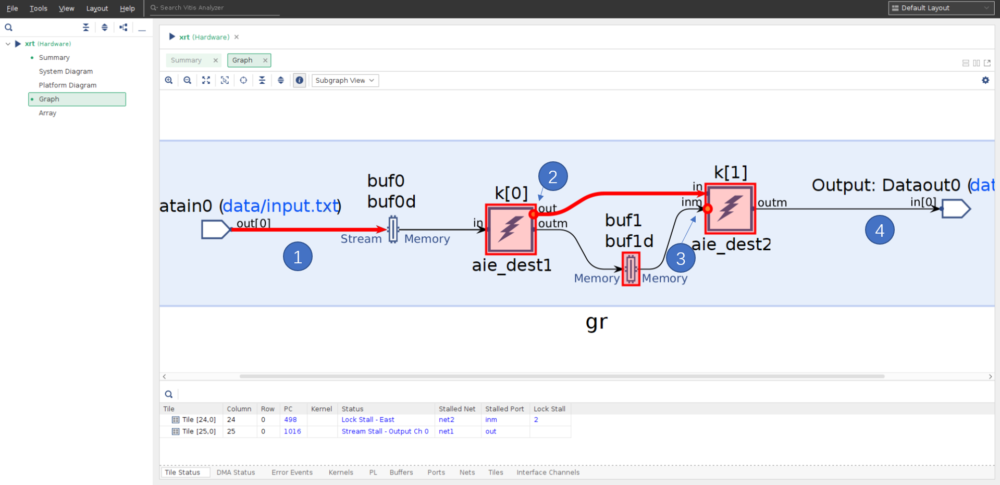
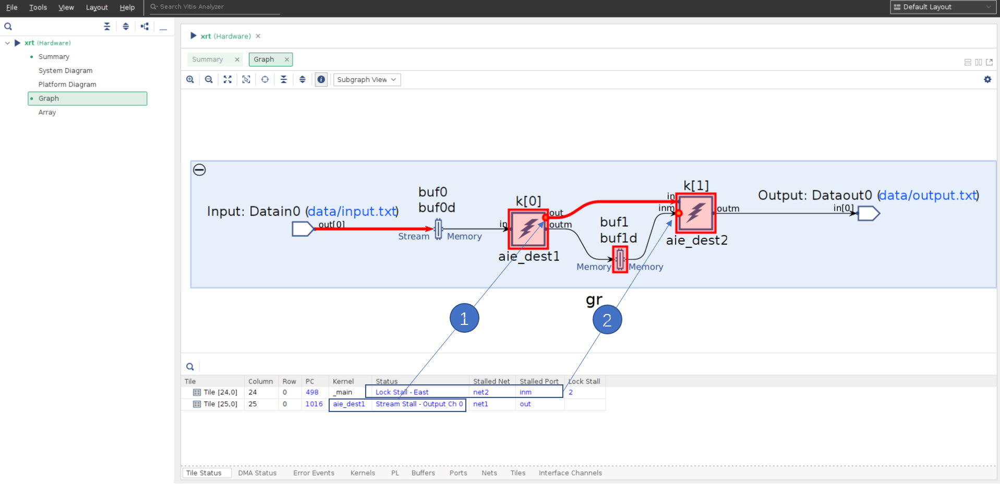
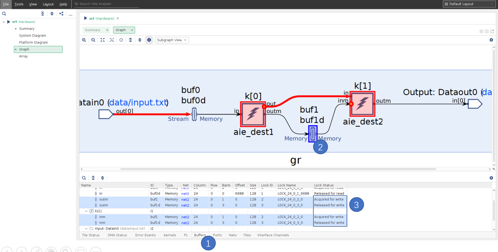
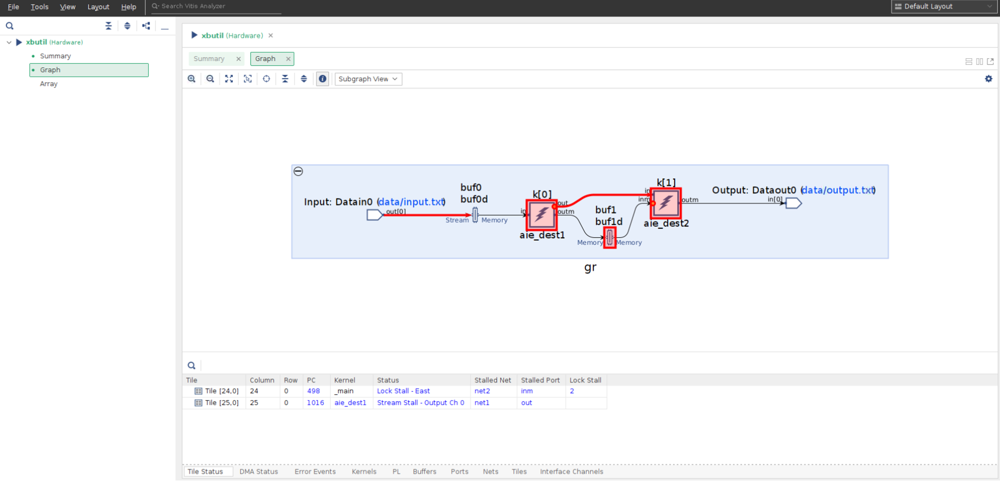

AI Engine DevelopmentSee Vitis™ Development Environment on xilinx.com See Vitis™ AI Development Environment on xilinx.com |
AI Engine Status Analysis¶
Version: Vitis 2022.1
This tutorial shows you how to output a summary of the AI Engine status for further analysis in Vitis Analyzer. The main methods to output AI Engine status are as follows:
Automated and periodic AI Engine status output: After initial setup in
xrt.ini, this method requires minimal user intervention, because the tool outputs the status at specified time intervals.Manual output the AI Engine status: This method requires that you run a command each time you want a status output report.
You can then open the status output in Vitis Analyzer for further analysis.
Note: The default working directory in this step is testcase_nofifo_hang, unless explicitly stated otherwise.
Note: The description here is based on the hardware flow. The methods decribed in this tutorial also apply for the hardware emulation flow.
Setting Up and Running the Design¶
Change the directory to
testcase_nofifo_hang.Modify the host code (
sw/host.cpp) to callgr.end();, which causes the design to hang forever.Build the hardware package. See the example commands below:
cd testcase_nofifo_hang sed -i 's/gr.end(.*);/gr.end();/' sw/host.cpp make package TARGET=hw
Boot from the SD card. In Linux, change the working directory to
/run/media/mmcblk0p1:cd /run/media/mmcblk0p1
Choose one of the following options to dump the AI Engine status.
Option 1: Automated and Periodic AI Engine Status Output¶
In the working directory /run/media/mmcblk0p1, create the file xrt.ini, and put the following contents into it:
[Debug]
aie_status=true
You can also specify the interval at which the AI Engine status should be probed and analyzed:
[Debug]
aie_status=true
aie_status_interval_us=10000
Run the application:
./host.exe a.xclbin
After some time, messages such as the following will be printed:
[XRT] WARNING: Potential deadlock/hang found in AI Engines. Graph : gr
[XRT] WARNING: Potential stuck cores found in AI Engines. Graph : gr Tile : (25,1) Status 0x1001 : Enable,Stream_Stall_MS0
[XRT] WARNING: Potential stuck cores found in AI Engines. Graph : gr Tile : (24,1) Status 0x201 : Enable,Lock_Stall_E
Note: These messages indicate that the design might be stuck. However, it is your responsibility to determine if it is a true deadlock based on the design.
Wait for some time. Either kill the application run by hitting Ctrl+C or suspend it by hitting Ctrl+Z. You will then see that multiple files are generated in the working directory:
xrt.run_summaryaie_status_edge.jsonaieshim_status_edge.jsonsummary.csv
Copy them to the local server for further analysis in Vitis Analyzer.
Analyzing the Automated Status Output¶
Open the run summary file with the following command:
vitis_analyzer xrt.run_summary
In Vitis Analyzer, click Set AI Engine compile summary in Summary view.

In the prompted dialog box, click the … button, and select the AI Engine compile summary (such as ./Work/graph.aiecompile_summary) to set the AI Engine compile summary.
The graph view is as shown in the following figure.

1: The red arrow from the data input from the PL to the window buffers buf0 and buf0d indicates that the input is trying to write to the buffer, but it cannot.
2: Kernel k[0] is trying to write to k[1], but has stalled at the output stream port. See the red circle on the kernel instance.
3: Kernel k[1] is trying to read from buffers buf1 and buf1d, but has stalled. See the red circle on the kernel instance.
4: The graph output to the PL is not stalled.
The Tile Status window also shows the information about the kernel, status, stalled port, and so on.

1: Tile [25,0] (kernel aie_dest1) is in status Stream Stall - Output Ch 0, which indicates that the kernel is stalled on writing output stream channel 0.
2: Tile [24,0] (kernel aie_dest2) is in status Lock Stall - East, which is stalled on port inm.
The Buffers view shows the buffer status of the graph. Click the Buffers window to select it, and then select the buffer in the graph to be analyzed.

The PING-PONG buffers are highlighted in the Buffers window. The Lock Status column shows the buffer lock status. The different statuses are as follows:
Acquired for read: The buffer has been acquired for read by the consumer kernel.
Released for read: The buffer has been released for read by the producer kernel.
Acquired for write: The buffer has been acquired for write by the producer kernel.
Released for write: The buffer has been released for write by the consumer kernel.
In this example, it shows that buf1 is “Acquired for write” and buf1d is “Released for write”. It indicates that buf1 has already been acquired for write by k[0]. The buf1d buffer is released for write, but not released for read. Consequently, the buffers are not able to be acquired for read by k[1], and k[1] is stalled.
Option 2: Manual output the AI Engine status¶
In Linux, run the application:
/run/media/mmcblk0p1
./host.exe a.xclbin
After the design runs for some time, either kill the application run by hitting Ctrl+C or suspend it by hitting Ctrl+Z. Dump the AI Engine status into a JSON file:
xbutil examine -r aie -d 0 -f json -o xbutil_status.json
Copy the JSON output to a local server for further analysis in Vitis Analyzer.
Analyzing the Manual Status Output¶
In Vitis Analyzer, click File → Import Xbutil JSON Output….
In the prompted window, set the following options:
• Xbutil JSON File: Select the JSON file that was manually generated with the
xbutilcommand. For example, select the filexbutil_status.json.• AI Engine Compile Summary: Select the AI Engine compile summary file. For example,
./Work/graph.aiecompile_summary.• Run Summary: The run summary to be written. A default name is provided. The run summary can be used to reload the analysis next time by clicking File → Open Summary… or File → Open Recent → Run Summary.
The Graph and Array views are shown in Vitis Analyzer. The analysis is similar as Analyzing the Automated Status Output.

Conclusion¶
After completing this tutorial, you have learned how to output the live status of the AI Engine and how to analyze it in Vitis Analyzer.
Support¶
GitHub issues will be used for tracking requests and bugs. For questions go to forums.xilinx.com.
License¶
Licensed under the Apache License, Version 2.0 (the “License”); you may not use this file except in compliance with the License.
You may obtain a copy of the License at http://www.apache.org/licenses/LICENSE-2.0
Unless required by applicable law or agreed to in writing, software distributed under the License is distributed on an “AS IS” BASIS, WITHOUT WARRANTIES OR CONDITIONS OF ANY KIND, either express or implied. See the License for the specific language governing permissions and limitations under the License.
XD051 | © Copyright 2020-2022 Xilinx, Inc.